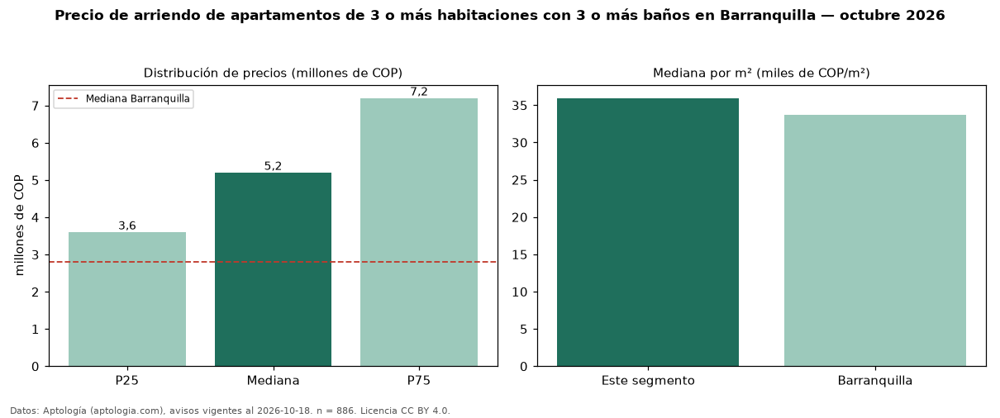

Precio de arriendo de apartamentos de 3 o más habitaciones con 3 o más baños en Barranquilla — octubre 2026
Con 886 avisos vigentes, el canon mediano de apartamentos de 3 o más habitaciones con 3 o más baños en arriendo en Barranquilla es COP 5,20 millones al mes. Frente a la mediana de los apartamentos de 3 o más habitaciones en arriendo de Barranquilla (COP 3,43 millones, n = 2.036), queda 52 % por encima; este segmento reúne el 44 % de esos avisos. Por metro cuadrado, la mediana es COP 35.948/m² al mes (n = 855), 11 % por encima de los apartamentos de 3 o más habitaciones en arriendo de Barranquilla (COP 32.296/m²). El área mediana anunciada es 148 m². La administración mediana declarada es COP 800.000 al mes (n = 344), aparte del canon. La mitad central de los avisos va de COP 3,60 millones a COP 7,20 millones (razón 2,0), una dispersión alta. El estrato más frecuente es 6 (49 % de los avisos con estrato). La mediana de todos los apartamentos en arriendo de Barranquilla es COP 2,80 millones (+86 % de diferencia). Datos: Aptología (aptologia.com), CC BY 4.0 — https://www.aptologia.com/arriendo/barranquilla. Archivos: PDF, CSV con las cifras y gráfica PNG.

| Avisos únicos | 886 |
|---|---|
| Percentil 25 | COP 3.600.000 |
| Mediana | COP 5.200.000 |
| Percentil 75 | COP 7.200.000 |
| Mediana por m² | COP 35.947 |
Fuente: avisos vigentes de portales inmobiliarios recopilados por Aptología, deduplicados (mínimo 30 avisos únicos por celda). Precios pedidos, no cerrados. Fecha: 2026-10-18.